An interesting ChatGPT generated piece of text
I was writing another game design article and needed to mention a specific "how to organize game content" thing in a concise way. I thought chatGPT could make writing that part faster for me so I gave it a try.
This was my prompt:
"In the context of game design, explain the difference between Additive vs. Multiplicative (game) Content."
What it wrote didn't make it into the article as it would have veered off too far offtopic, but I liked what it had given me so much that I wanted to share it anyway on its own. As a snippet, it is useful enough to designers out there to have it open their mind to viewing content from a different perspective.
However I didn’t like how rigid it was in its interpretation of this concept, making a hard divide on things that are and aren’t multiplicative content, which I did not agree with. I will offer my detailed personal thoughts after you read the text for yourself.
This is what ChatGPT wrote:
In the context of game design, "additive" and "multiplicative" refer to different approaches in incorporating content, features, or elements into a game. These terms are often used to describe how additional components contribute to the overall player experience. Let's delve into each:
- Additive Content:
- Definition: Additive content involves introducing new features or elements to a game that expand its scope without significantly altering the existing systems.
- Effect: It adds variety and breadth to the gameplay experience without fundamentally changing the core mechanics. Players can engage with new content without disrupting their understanding of the game's basic rules.
- Example: Adding new levels, characters, weapons, or items that complement the existing gameplay but don't drastically change the way the game is played.
- Multiplicative Content:
- Definition: Multiplicative content introduces elements that interact with existing systems in a way that amplifies or alters the overall experience. The impact of these additions multiplies with the existing content, often resulting in emergent gameplay dynamics.
- Effect: It can lead to more profound and complex interactions within the game. The introduction of multiplicative content can create emergent strategies, deeper gameplay depth, and a more dynamic and evolving experience for players.
- Example: Adding a new gameplay mechanic that interacts with existing systems in unexpected ways, creating synergies or trade-offs that fundamentally change the player's approach to the game.
Comparison:
- Additive Content: Expands the game horizontally by introducing new elements that work alongside existing features.
- Multiplicative Content: Expands the game vertically by introducing elements that interact with and potentially transform existing features, resulting in more complex and nuanced gameplay.
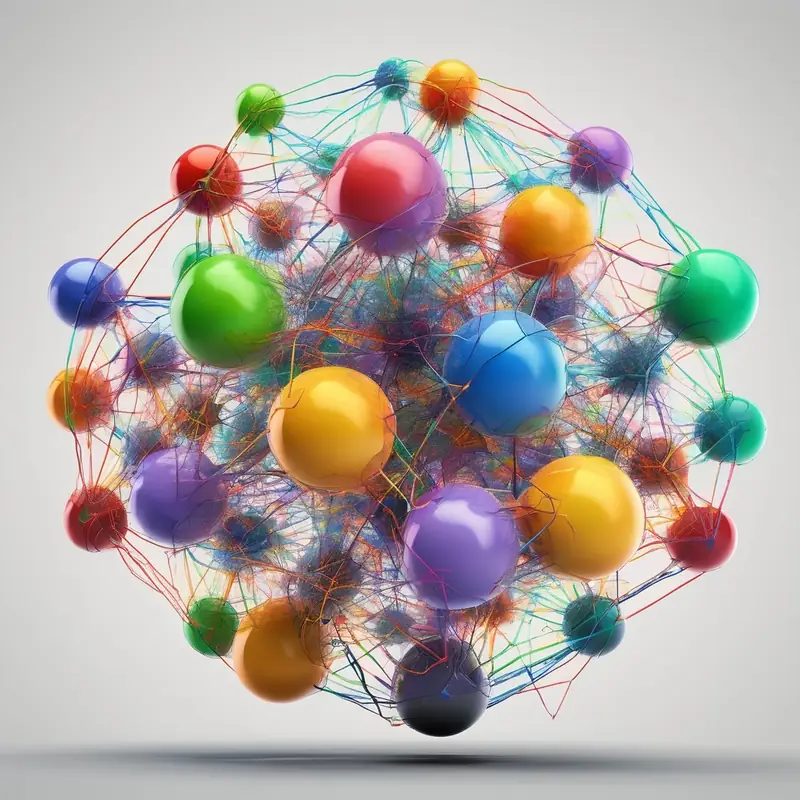
Both additive and multiplicative approaches have their merits, and game designers often use a combination of both to keep a game fresh and engaging. The choice between additive and multiplicative content depends on the design goals, the desired player experience, and the overall vision for the game.
My thoughts on this and a personal example
It didn't quite nail what my view on the topic was, but it did highlight the main point how they are different.
(Note: the included images were created and added by me, chatGPT did not add them by itself.)
The biggest thing it missed here was that in a game project where content is organized in a modular, interchangeable and swappable manner, the levels, characters, props, decorations, weapons, tools, vehicles or items can themselves be Multiplicative Content just as equally.
Here's some examples of this concept in a hypothetical game where your goal is to assault an enemy military base with a soldier character.
Level as Multiplicative Content
Instead of building a level where everything has been placed by hand, you instead place zones on the level within which items, characters and structures can appear in when the level is loaded. This can further be nested by having sub zones within the zone that further randomize the final thing you’ll interact with in the game.
Compared to a static pre-built level which offers no surprise after the first playthrough, a zone-randomized level could have the player start anywhere, have the enemy base be elsewhere on the map each time and the defenders could be shuffled to start in different locations and in different numbers.
Suddenly each playthrough is unexpected and exciting each time this randomized level is played.
The pictures below show how it can work for a simple top-down game. This same principle can be adapted to any 2D or 3D game, including platformer type side-scrollers, first person or third person games.
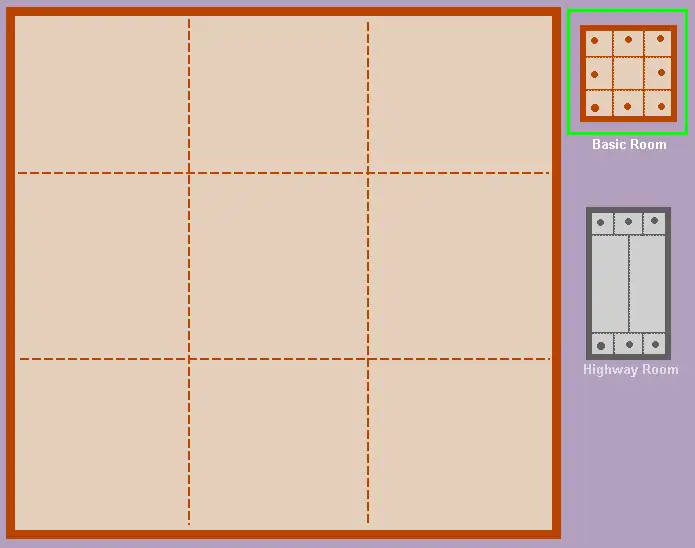
In this example, Basic Rooms are places where events happen, while Highway Rooms are mainly for long distance transit between Basic Rooms where it contextually makes sense. Basic Rooms can be chained together too without needing to have Highway Rooms at all.

Rectangle spawn method means you have a box area with these variables: X and Y origin coordinate, usually the top left point of the spawn box and then Width and Height to determine the size of the box in code. Then you make the code spawn something within those coordinates at random.
Circle is a bit more simple; X and Y origin coordinate, usually the center point of the circle and then Radius to determine the size of the spawn circle area. Then you make things spawn anywhere in the circle between its center origin and up to its maximum radius at random.
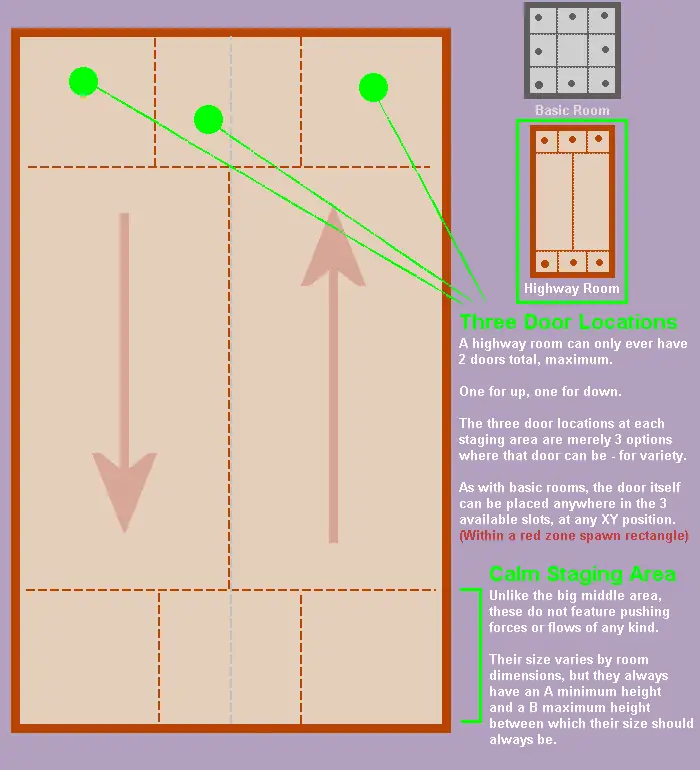
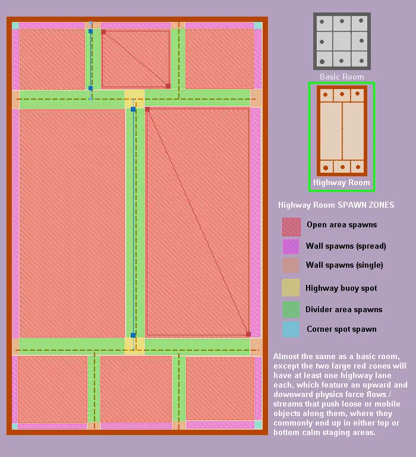
(Same as above, but for the Highway Room setup. Different spawn zones would have certain types of enemies, objects or things that are best suited for appearing there; some are mounted to walls, while others are freestanding.)

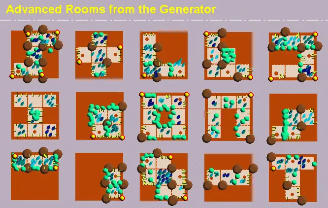
(The levels can be made even more wildly random by blocking off entire sectors while ensuring that at least 2 adjacent sectors are still available. I think a marching squares algorithm can achieve this effect.)
Context for the next few images:
Originally I developed this procedural generation system for a top down game that takes place inside the human body where you play as a Symbiont, an artificial antivirus nanomachine, to cure a human from illnesses from the inside. You’d travel between different parts of the body and spray medicine to remove bad things.
You’d enter the human through air or contact transmission via orifices of a human (nose, mouth, wound) and then travel via blood vessels to get to places where you need to go.
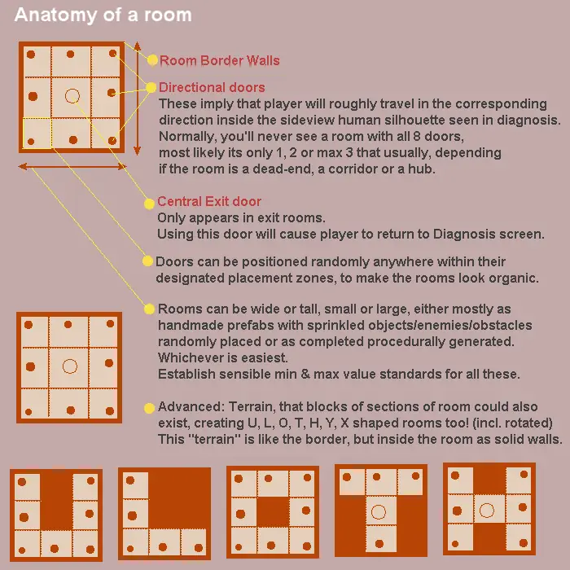
(The basic building block of the entire system. I use the term “Room” here, but this can be considered also as Scene, a Level, a Map, a World, a Location and whatever else is the equivalent to each game engine.)
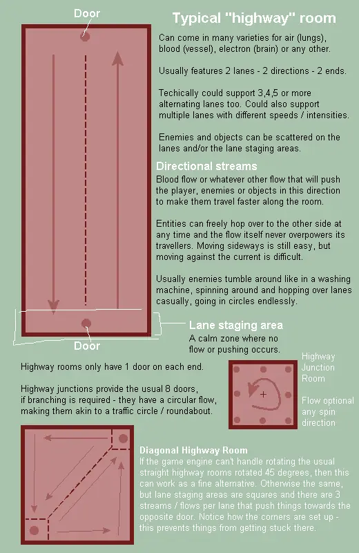
(The basics of a Highway Room, showcasing dynamic environments that feature physics forces or similar that push things around like a river current. The foundational basics here are tremendously flexible for creating practically any kind of variation of a level that feels significantly diverse to play on.)
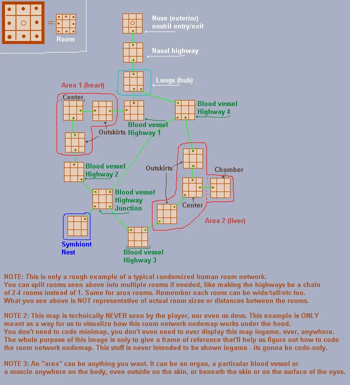
(The game would procedurally generate entire campaigns using these rooms, connected as a network of only the parts that were relevant to the mission to keep the gameplay focused and short.)
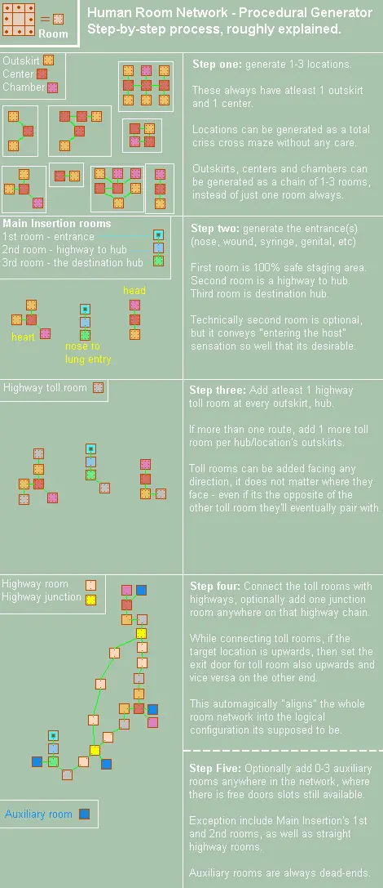
(This image explains how the algorithm would create a level campaign network procedurally. It uses specific rules that create a clear structure that is still quite flexible to create interesting results each time.)
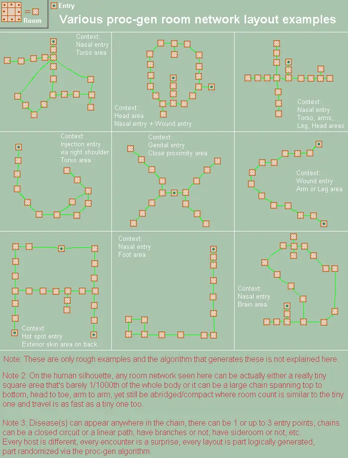
(The full potential of the system and the massive variety of levels that would be possible to attain with this type of procedural generation. Take into account the procgen that happens per individual room and then combine that with this system and you’ll get quite the fascinating algorithm to create an endless supply of campaigns that are never the same, yet still have meaning, structure and context.)
With this type of structure, all you need is to define varied terrain and designate potential spawn zones for the game to use. Just one added map can yield an endless amount of fresh play sessions.
Character as Multiplicative Content
Instead of having a predefined character with specific abilities, traits, clothing, armor, equipment and weapons, all these things could be randomized and handed out to a character using a 'heuristics driven decision tree randomizer'*.
So instead of either fighting as the same soldier each time or having to fight enemies that are the same each time, here you can instead expect to fight opponents that might have almost anything on them in any type of configuration.
Maybe they all have sniper rifles, maybe it's only pistols, maybe it's a mix of things.
*Side note - a heuristics driven decision tree randomizer
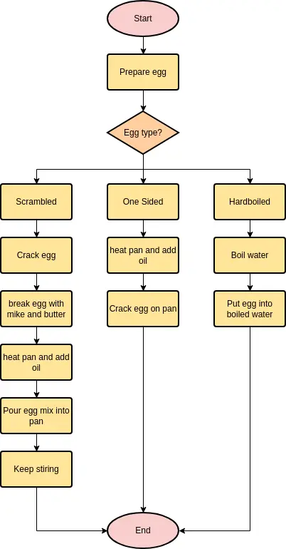
The idea is to give the procedural generation algorithms a ‘natural logic’-driven structure to follow where things on a higher level influence things on the lower level in a way that makes sense as a butterfly-effect like consequence, yet still have a chance for interesting surprises to happen. This is how you do procedural generation right.
A “heuristics driven decision tree randomizer” may sound fancy and it may even be the wrong term for it - I honestly don’t know, technically it can be called a flowchart, decision tree, heuristics or something else - but regardless in actual game programming code it's really just a battery sequence of "If, Else" statements arranged as a tree that branch off, determining how the randomization will be organized.
It's a more controlled, cleaner and structured way of creating randomized results than simply saying "spawn randomly anyone with anything" without any cohesion. The idea behind it is to let the randomizer decide what biases it should lean on before it actually doles out the randomization. This prevents the infamous ‘1000 bowls of differently colored porridge’ problem.
An example of such a heuristics randomizer:
- How many defenders should there be? Little, Some, A lot?
- How should they be placed on the map? As individuals? As groups? All in one place? A mix of these?
- Should they be placed close to points they're trying to guard or far away? By how much?
- Are they healthy, damaged or are some of them already dead when the battle begins? To what degree?
- Are combat supplies and pickups close to them or are they a fair distance away from them? By how much?
- Do they use primary weapons and sidearms or only sidearms or only primary weapons? Or just grenades or just fists? Or a mix of these?
- Is the AI mood aggressive or defensive generally? To what degree?
...and so on. It's just a battery of questions you feed to the game in a top to bottom sequence to let it decide how it wants to put together the level and its characters when it loads up.
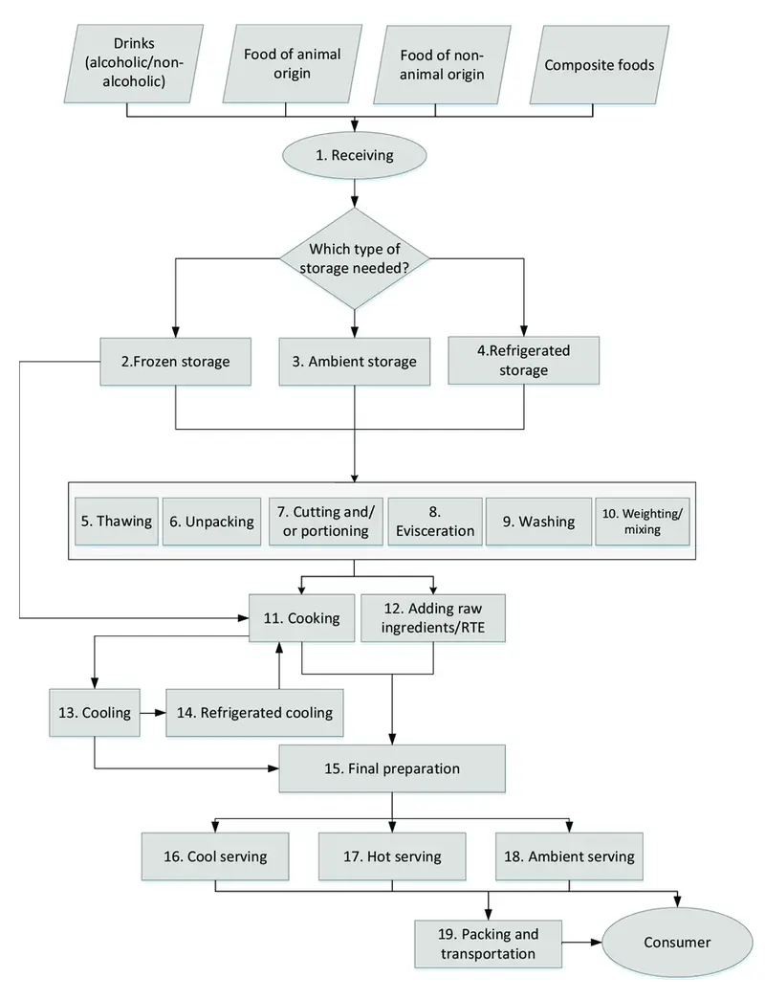
Some questions may branch off temporarily into a subtype topic of parameters that only make sense for the particular option the original question split off at. Eventually it will merge with the main question chain with the parameters it got from the subtype topic.
Other questions may branch off completely into a different subtype topic that will not merge back into the original structure, resulting in a product that makes more sense as a separate type that differs greatly from the main question chain products.
Overall, this method is much better than amateur procedural generation attempts that forget to do this.
The great benefit and potential of Multiplicative Content
With this structure, any piece of equipment, any weapon, any ability and such could transform any newly added character bodies to become practically anyone instead of having to fight the same unique named John McJohn villain character each time you play the game.
Weapons/Items/Armor/Equipment can work as multiplicative content too; the moment you add one new weapon, it can be added to the pool of possible weapons either you or the enemy can spawn with or equip during the battle.
Combined with randomization, the variety of new combinations that arise even from one extra added weapon, item, prop or anything else will increase exponentially. Sometimes it will feel like playing an entirely new game all over again when something gets added in this way, making the gameplay experience feel fresh, exciting, surprising and engaging each time, with each new content update.
And the best part you can keep adding more and more content this way to increase the game's value, where not only you've added new items to extend the game, but you've also given all the old content a new thing to combine with, essentially multiplying the amount of things you can now do in the game.
This is something Additive Content cannot do and why I'm here to argue its inferior compared to Multiplicative Content.
Additive Content will not give life to old content and will have more limitations and restrictions that will become unsustainable in the long term to keep producing because people will consume it far faster than you'll be able to make it. Multiplicative Content however may need much less time to build but result in far better value and longevity by comparison.
With Additive Content you spend 5 weeks making something that will last 5 minutes.
With Multiplicative Content you spend 5 hours making something that will last 5 weeks.
(Note: This doesn’t take into account the time it takes to set up the framework to support this, but still.)
It takes some time to set up the framework to support multiplicative content, I don't want to dismiss that.
You can't just start creating Multiplicative Content without standardization, modularity and intercompatibility built into the game's content management and usage system, it won’t be possible without those.
However, the value gained from it is far better than doing it the rather primitive and shortsighted method of making Additive Content that is only faster in the short term and comes with way too many drawbacks to be anywhere near as valuable as Multiplicative Content.
Personally I think the future will be dominated by Multiplicative Content, while Additive Content will fade into a lesser role, only used if the purpose of the multimedia experience is to tell a story without really implementing much in the way of robust game mechanics into its systems.
Talk about it
Questions, disagreements and ideas of your own are all welcome. Discuss this article with other readers on the Reactorcore Games Discord, follow new articles and dev news on Patreon, or write to me directly.